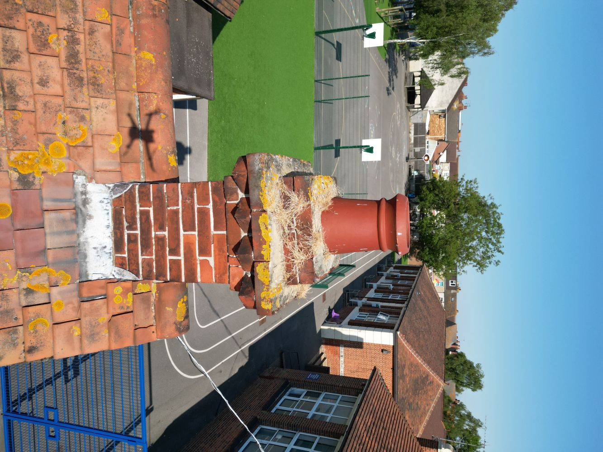
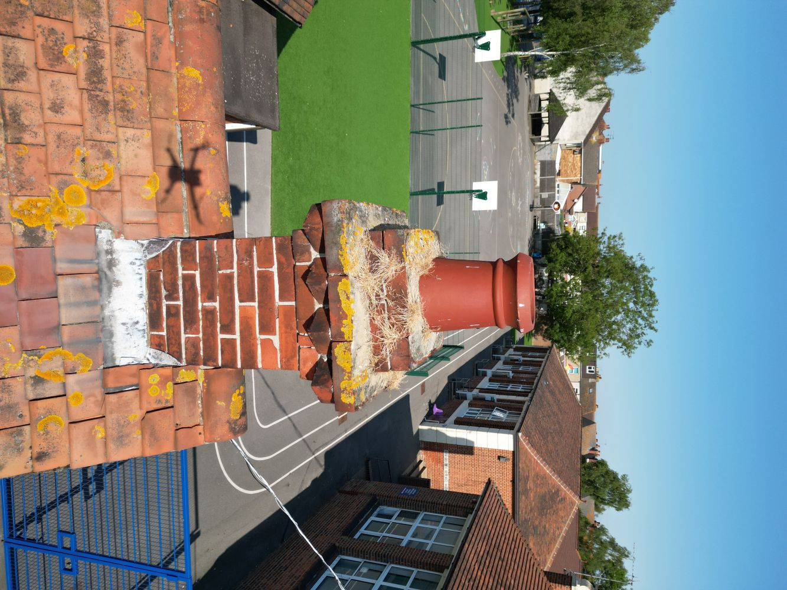
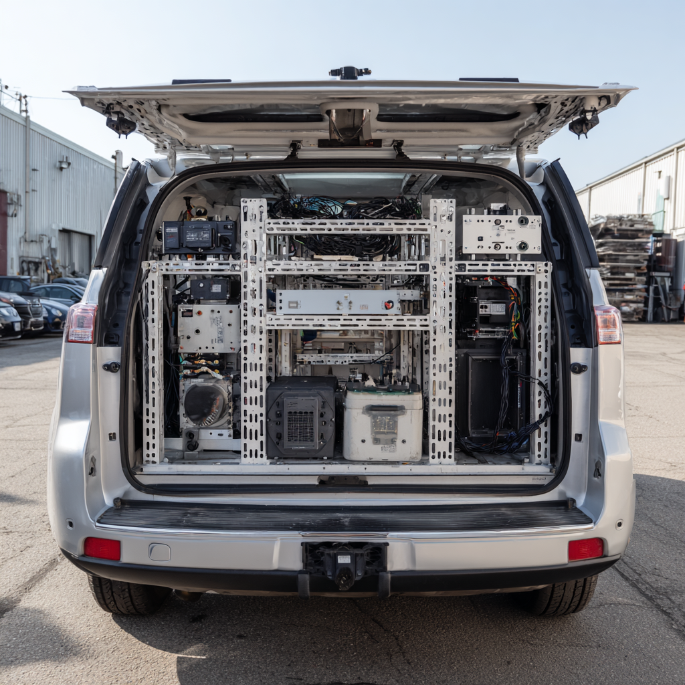
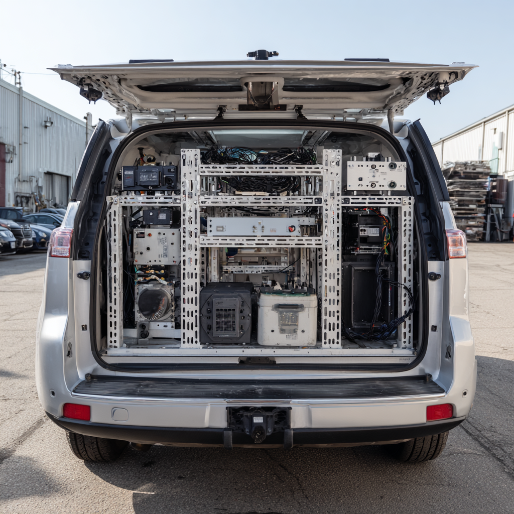

ATS are an innovative team and have been involved with drones for over 30 years. Our original experience was designing, building and operating military target drones.
Our Certified Drone Fleet is used for a variety of specialist services, including:
We have been providing Photographic and Panoramic Surveys to the telecoms industry since 2002.
Since that time our name and reports have become the recognised standard in the industry.
We have provided this service for every mobile operator in the UK.
Key Facts & Capabilities:
EXAMPLES

Our photographic roof and chimney survey services are now the preferred method for many property management companies to keep on-going records of their property portfolios.
By using our drones, our operators work safely from ground level thus minimising health and safety issues as well as added costs from things like scaffolding or cherry pickers.
Client Benefits & Cost Savings:
EXAMPLES
 


We understand that off-the-shelf solutions often fall short of meeting unique technical and environmental challenges.
That's why we offer a comprehensive service to design, build, and integrate specialized hardware, including vehicle-mounted telecommunications gear, sensor arrays, and custom mounting solutions.
Key Benefits:
EXAMPLES
 
